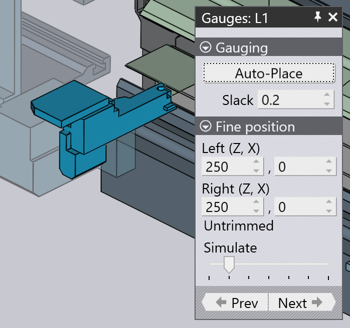

Úprava dorážení
První ohyb na každé straně (nebo sekci) musí být vztažen k dorazovým palcům, aby byl díl přesně umístěn před uchopením manipulátory s díly. U ručních strojů se dorazy přesunou do polohy za přidržovače a obsluha k nim přiloží díl[1].

Zobrazení panelu dorazů:
-
Vyberte první ohyb strany. Když jsou dorazy viditelné v simulaci, klikněte na ně.
-
Otevřete navigátor a klikněte na buňku Dorážení.
Panel dorážení má několik funkcí a nastavení:
-
Nastavení Automatický výpočet se používá k výpočtu automatických poloh pro dorazy. To se provádí pro všechny strany, když přepnete do režimu výklopného ohýbání. Po ručním přesunutí dorazu do jiné polohy je však toto tlačítko užitečné pro resetování zpět do výchozí polohy. Tedy TecZone Fold vypočítá sadu možných poloh pro dorazy a pokaždé, když kliknete na toto tlačítko, zobrazí další možnou polohu pro dorazy (nakonec se vrátí k první).
-
Nastavení Vzdálenost představuje dodatečnou mezeru mezi dorazy (to odpovídá parametru D Z1-Z2 v nastavení centrování stroje). Tímto způsobem lze mírně otevřít dorazy, aby se usnadnilo vložení dílu.
-
Nastavení Vlevo (Z, X) určují polohu levého dorazu v osách Z a X. Poloha Z je vzdálenost měřená od středové osy surového materiálu a poloha X je relativní k přední hraně surového materiálu. Při úpravě těchto hodnot se doraz okamžitě posune a provedou se kontroly:
-
Obdržíte chybu doraz není zapojen, pokud se doraz nedotýká dílu.
-
Obdržíte chybu doraz kolidující s dílem, pokud se doraz posune tak, že dojde ke kolizi s obrobkem.
-
-
Nastavení Vpravo (Z, X) určují polohu pravého dorazu v osách Z a X.
-
Posuvný regulátor Simulovat lze použít k pohybu simulací tohoto kroku.
-
Tlačítka Zpět a Další slouží k přepínání na druhé strany dílu, kde můžete upravit nastavení dorážení pro tyto strany.